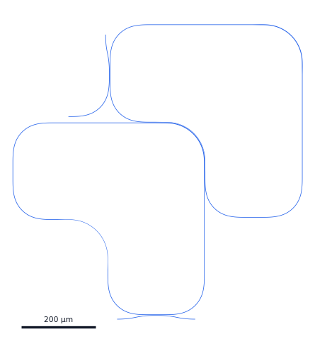
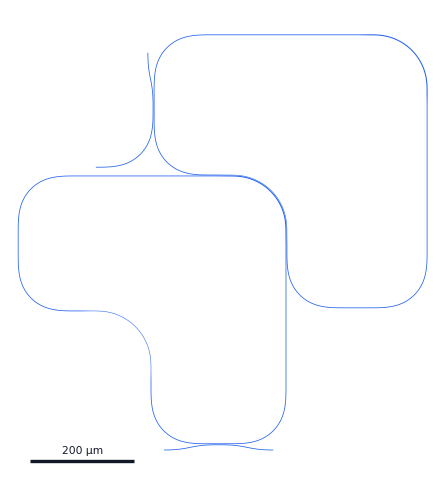

RingDouBoomerang
包含两个串联回旋镖谐振器的组件。


import AIPLPhMTools as ap
c = ap.RingDouBoomerang()
c.write_gds("RingDouBoomerang.gds")3D 层叠视图
左键旋转、右键/Shift 拖动平移、滚轮缩放；每一层按实体块显示（顶面 + 侧壁，不绘制底面），厚度可以逐层单独调整。厚度只用于显示，层叠顺序按图层类型自动排列，不绑定任何具体工艺。
左键旋转 · 右键/Shift 拖动平移 · 滚轮缩放 · 双击复位
参数与可选项
默认值来自函数签名；说明优先取 docstring，缺失时用通用提示补齐。带 有对比 的参数在下方有预渲染的版图对比。
| 参数 | 类型 | 默认值 | 含义 / 对版图的影响 |
|---|---|---|---|
| WidthRingIn | float | 2 | 回旋镖单元波导宽度 (µm)。 |
| WidthRingOut | float | 1 | 回旋镖单元波导宽度 (µm)。 |
| WidthStraight | float | 1.5 | 回旋镖单元波导宽度 (µm)。 |
| RadiusRing | float | 100 | 回旋镖内外 S 弯弯曲半径 (µm)。 |
| RadiusEuler | float | 100 | 回旋镖内外 S 弯弯曲半径 (µm)。 |
| GapRR | float | 0.3 | 内环与外环波导间隙 (µm)。 |
| GapRB | float | 0.5 | 回旋镖桥臂与总线波导耦合间隙 (µm)。 |
| DeltaLB2有对比 | float | 2 | 第二个 Boomerang 的 LengthBridge2 增量 (µm)。 |
| LengthBridge1 | float | 10 | 回旋镖内部结构参数 (µm)。 |
| LengthBridge2 | float | 40 | 回旋镖内部结构参数 (µm)。 |
| LengthTaper | float | 20 | 回旋镖内部结构参数 (µm)。 |
| LengthCouple | float | 10 | 总线波导耦合段长度 (µm)。 |
| IsHeat | bool | True | 控制两个 Boomerang 的加热器总开关。 |
| oplayer | LayerSpec | LAYER.WG | 光学波导层。 |
| HeaterConfig | HeaterConfigClass | None | 加热器配置对象，None 表示不添加加热器。 |
版图对比
以下图像全部由实际调用该器件、写出 GDS 后渲染；同一组参数只改标签所示的选项，其余保持默认。
c = ap.RingDouBoomerang()

ap.RingDouBoomerang(DeltaLB2=10)端口
| 端口 | 宽度 (µm) | 方向 | 中心 (µm) | 层 |
|---|---|---|---|---|
Add | 1.5 | 180° | (-337.301, 45.107) | WG |
Drop | 1.5 | 90° | (-237.301, 265.107) | WG |
Input | 1.5 | 180° | (-205.008, -497.416) | WG |
Through | 1.5 | 0° | (4.992, -497.416) | WG |
R1Lo1 | 2 | 315° | (0, 0) | WG |
R1Lo2 | 1 | 315° | (-260.115, -260.115) | WG |
R1Ro1 | 2 | 135° | (0, 0) | WG |
R1Ro2 | 1 | 135° | (-260.115, -260.115) | WG |
R1Lb1 | 1.5 | 90° | (-485.416, -120.008) | WG |
R1Lb2 | 1.5 | 270° | (-485.416, -80.008) | WG |
R1Rb1 | 1.5 | 0° | (-120.008, -485.416) | WG |
R1Rb2 | 1.5 | 180° | (-80.008, -485.416) | WG |
R2Lo1 | 2 | 315° | (262.115, 262.115) | WG |
R2Lo2 | 1 | 315° | (0, 0) | WG |
R2Ro1 | 2 | 135° | (262.115, 262.115) | WG |
R2Ro2 | 1 | 135° | (0, 0) | WG |
R2Lb1 | 1.5 | 90° | (-225.301, 140.107) | WG |
R2Lb2 | 1.5 | 270° | (-225.301, 182.107) | WG |
R2Rb1 | 1.5 | 0° | (140.107, -225.301) | WG |
R2Rb2 | 1.5 | 180° | (182.107, -225.301) | WG |
使用图层
WG 1/0
展开完整 docstring
包含两个串联回旋镖谐振器的组件。
两个回旋镖单元通过 DeltaLB2 实现结构上的微小差异以引入失谐。
参数:
WidthRingIn, WidthRingOut, WidthStraight: 回旋镖单元波导宽度 (µm)。
RadiusRing, RadiusEuler: 回旋镖内外 S 弯弯曲半径 (µm)。
GapRR: 内环与外环波导间隙 (µm)。
GapRB: 回旋镖桥臂与总线波导耦合间隙 (µm)。
DeltaLB2: 第二个 Boomerang 的 LengthBridge2 增量 (µm)。
LengthBridge1, LengthBridge2, LengthTaper: 回旋镖内部结构参数 (µm)。
LengthCouple: 总线波导耦合段长度 (µm)。
IsHeat: 控制两个 Boomerang 的加热器总开关。
oplayer: 光学波导层。
HeaterConfig: 加热器配置对象，None 表示不添加加热器。
返回:
Component: 双回旋镖谐振器组件。
端口:
Input, Through, Add, Drop: 光学端口。
R1Lo1, R1Lo2, ..., R2Ro1, R2Ro2, ...: 各单元原始端口。
信息 (Info):
R1length, R2length: 各单元光学路径长度。